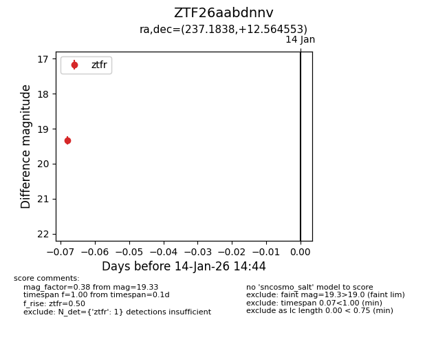
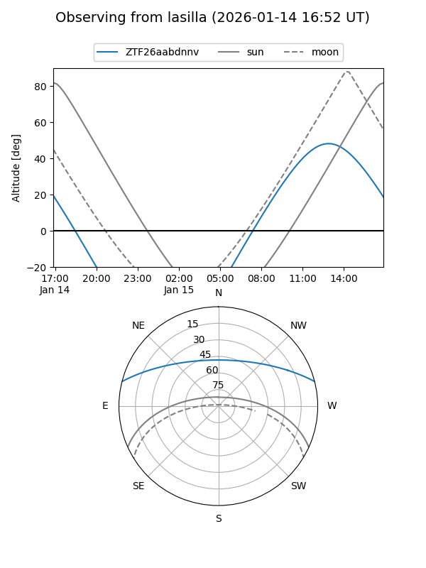
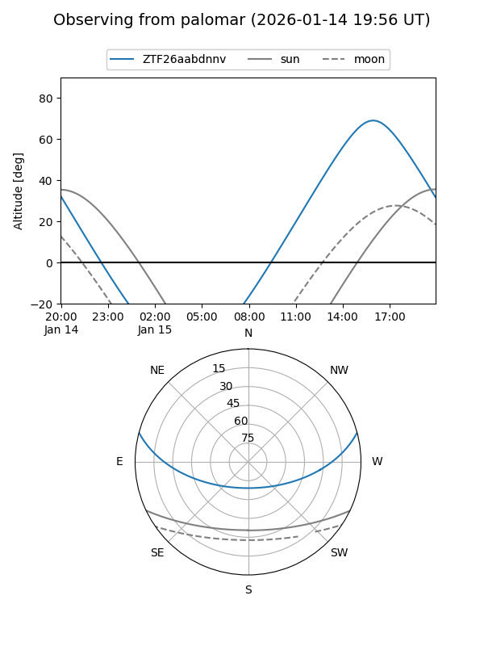

ZTF26aabdnnv
Target ZTF26aabdnnv at 2026-01-14 14:45
Aliases and brokers:
FINK: link
Lasair: link
ALeRCE: link
alt names
ZTF26aabdnnv (ztf,fink_ztf)
Coordinates:
equatorial (ra, dec) = 237.1838,+12.56455
equatorial (HMS+DMS) = 15:48:44.11,+12:33:52.39
galactic (l, b) = (22.5627,+46.10741)
Flags:
Photometry:
last ztfr=19.33
1 ztfr detections
Lightcurve

Visibility


Additional plots